到厦门享受温暖冬日阳光
Day 0 夜游内岛
【交通】 上海飞往厦门，春秋航空。现在要求托运行李严格多了，20寸登机箱不让带上去，首重100元，非常不推荐。
【住宿】 纳客青年旅舍（靠近曾厝垵）45元一晚。气氛很好很热闹～
【游玩】 从网上买了一个夜游团，行程四个小时，节奏比较慢。路线是环岛路骑行，白城沙滩，世茂，沙坡尾，海湾公园。世茂旁边有一个小小的文艺街区，就在沙坡尾旁边，可以小逛一下。 吃堡是新开的，没去吃，感觉不是很正宗。夜游团之后又去了中山路吃夜宵，五星推荐局口拌面，不是很好找，但是超好吃。
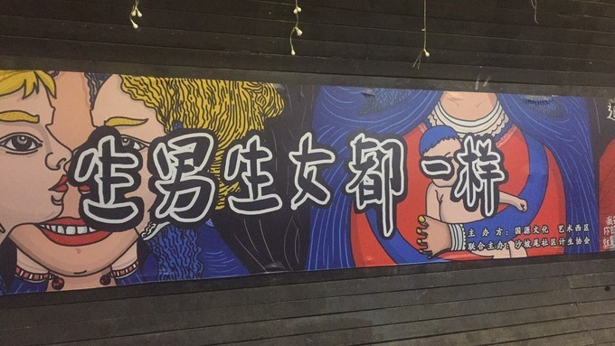 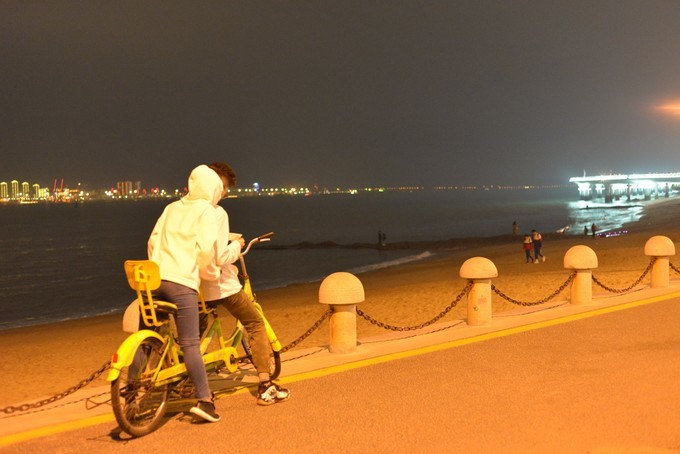
【美食】局口拌面，超五星推荐 局口拌面超难找的，从中山路的这个局口街进去，一直走，注意右手边这个门牌，有个炒鸡窄的路口，大概30cm，走进去有很多地道的小吃。局口拌面就是其中之一，旁边的莲欢海蛎煎也是很正宗的！
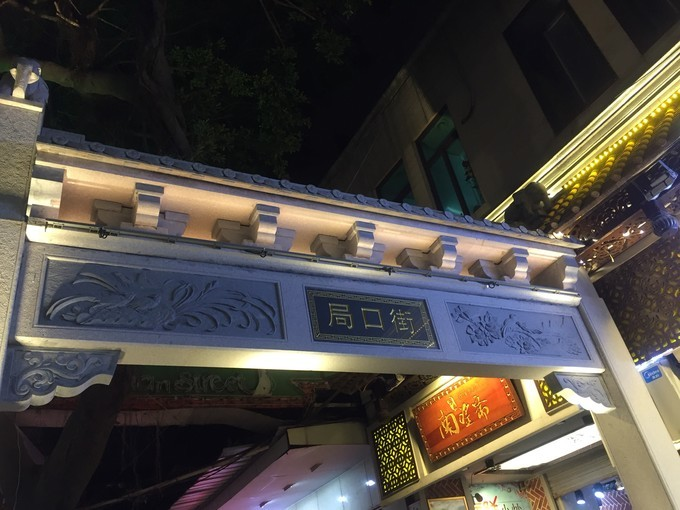 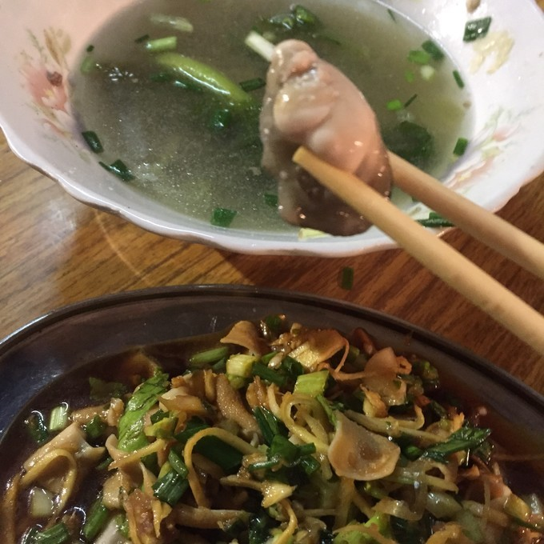
海蛎真的超级新鲜，入口很嫩很滑，非常新鲜，没有一丁点的腥味，而是海鲜的鲜甜味。下面的是凉拌鸭肠，鸭肠超级嫩，也没有腥味，非常爽口。
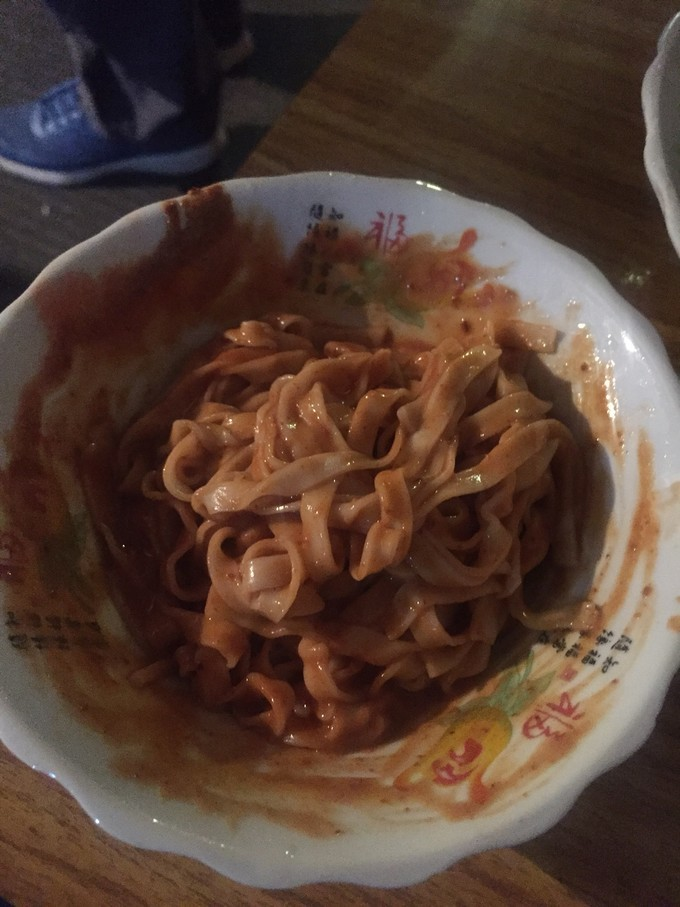
拌面的麻酱味道很浓郁，很小一碗，吃了不会觉得撑，然后再来碗汤美滋滋！
Day1 武夷山
【交通】高铁三小时，到达武夷山东站，乘K1路可直达武夷山附近
【住宿】揽海听风青年旅舍，50一碗，太空舱式，干净宽敞，紧邻公交站。
【游玩】乘公交到北门，乘游览车到大红袍景点，从大红袍景点徒步3km到达水帘洞景点，大概1.5h。山路人不多，空气很好，一路上都能听到溪流的声音～ 从水帘洞回青旅，附近就是步行街，去买了茶叶，我是在坐忘茶室买的，老板娘非常真诚，一看就是真的茶农，身上没有什么商人气息，是真的爱茶的人。

Day2 还是武夷山
【游玩】 5：30出门，上午游玩了天游峰、一线天和武夷宫。下午乘竹筏漂流。中午有时间可以午睡一会儿。 原本打算看日出，不过时间没有规划好。因为公交车和景区游览车开始运营的时间都比较晚。如果想看日出的话，建议还是自己找车到景点吧。 早上先去了天游峰，从景点入口到天游峰的顶至少是需要一个小时，如果路上拍拍照的话也是要一个半小时的。天游峰的阶梯还是蛮陡的，腿脚不方便的还是不建议去的。 然后跟着游览车游玩了一线天，最窄的地方能感觉到两边的岩石挤着你的胳膊，感觉十分奇妙，值得体验。 然后去体验了九曲溪的漂流，可以带一包鱼食，一边漂流一边喂鱼，会看到鱼从水面跳起来的样子。能够观赏到两边山崖的地形地貌，值得体验。总时长大概1.5小时。 玉女峰和虎啸岩因为没有时间而且也累了就没有去。
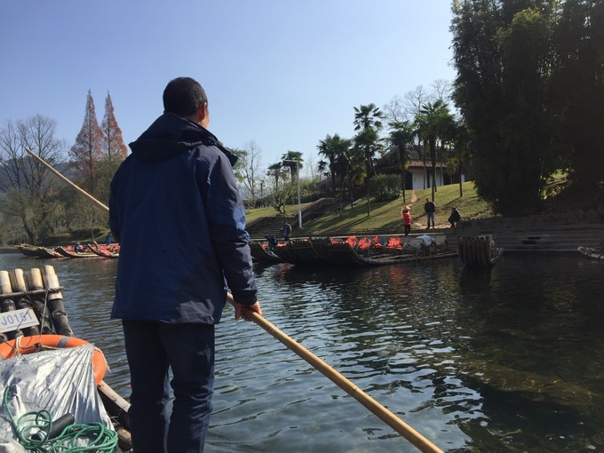
Day3 鼓浪屿
【逛】 早上睡到自然醒，拉开窗帘就呼吸到了海边的新鲜空气非常爽。收拾一下就出门了，因为时间并不充裕，所以没有购买景点联票，所以没有去五大景点，后来发现岛上其实有很多不需要门票就能体验的小景点，也是很棒的。 最喜欢的就是美华沙滩了，在水边踩踩水，玩玩沙子，因为天气冷也没有人游泳，所以非常适合拍照！！在海边呆了大概一个多小时，觉得很放松~ 在岛上就随便刚刚就回感觉到厦门的浪漫，看看巷口的花花草草，就感觉整个人都甜美起来了！ 。
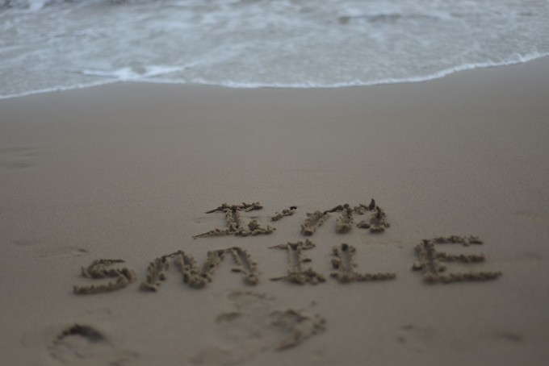 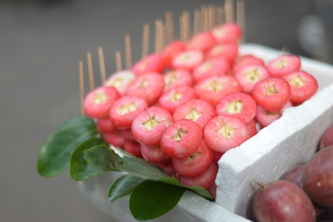 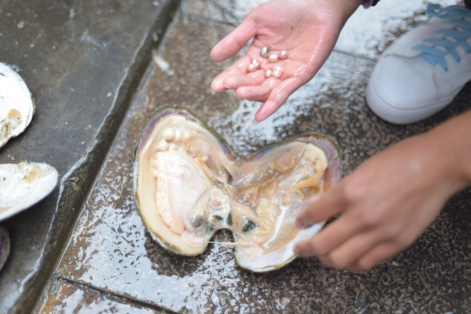 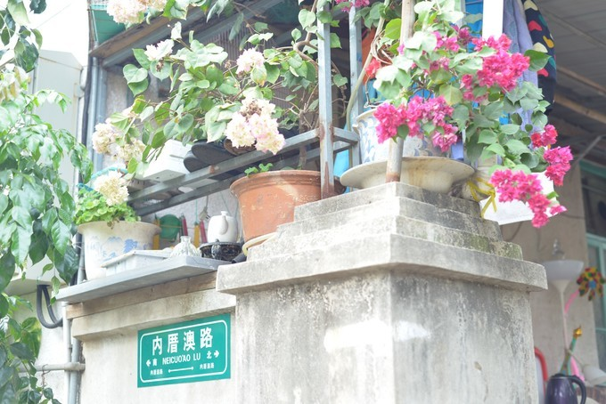
【吃】 鼓浪屿上有很多手信连锁店，小哥哥小姐姐们都非常甜美，emm虽然...但是无所谓啦，不要戳穿这一份浪漫好吧~（emm会在我自己的公众号里面提到，@斯迈欧够） 总体情况是这样的：分为路边小摊和路边手信小店。小摊的话有各种水果、榴莲糕、土笋冻等等，总体来说不贵也不难吃，说不定会有人喜欢，总之体验一下也是蛮好的。路边小店的话主要是卖手信礼品袋的，都不便宜，但是店员会非常热情地邀请你试吃，放心大胆吃吧，海量试吃已经成为了岛上的一种氛围~就是别养成习惯，万一到了水果摊看见削好的水果也伸手就不好了吧哈哈哈~
海蛎煎——吃了一份海蛎煎（龙头路209号），20块一份，虽然小贵，但是还蛮好吃的，摊的很薄，蛋和面很均匀，海蛎也不腥，总体来说满意。我端着我的海蛎煎继续往前走，有卖猪肉脯的小姐姐直接在我的盘子里面放了试吃猪肉脯，哈哈哈哈被投喂感觉很幸福啊~
牛轧糖——不夸张地说，我试吃了岛上所有店铺的牛轧糖，觉得糖猫的最好吃！糖猫的牛轧糖不甜，配料却很正。我还试吃了一家什么什么小姐的，糖很软，牛奶味很足，也蛮好吃的。最后还是选择了糖猫。其他家的就很平常了，没觉得有什么特别的地方，反正都能试吃，大家自己尝咯~
花草茶——有一家叫桂莲的开了超多分店，可以疯狂试喝，我最后买了一点点果肉可以吃的。讲道理因为是按克卖的，所以还是挺贵的，大家买的时候要冷静啊~
猪肉脯——小猪找肉家有一款海苔味的味道不错，不过我没买啦~
芒果——可能会酸，8块一小支
【交通】乘渡轮返回厦门,我天轮渡在卖牛轧糖,太吵了
【住宿】中山路太空舱酒店，58块一晚。非常干净，紧邻中山路，非常方便第二天的逛吃
Day 4 畅游内岛
【逛】 去了顶澳仔路的猫街，其实也就100m，路的两边是猫的雕塑，都很可爱。然后有一家猫咪博物馆，其实是一家店啦，里面可以近距离撸很多很多种猫！！！非常幸福！！每天在学校云养猫的我喜欢到昏厥，疯狂打call！！根本想不起来拍照谢谢！！！ 然后去了南普陀寺，寺庙还是很漂亮的，不过我无感啦。 然后去了增厝垵，非常不推荐，太商业化了，小吃也都是很俗套很旅游业的那种，也没有走心的小店。 然后去了海湾公园看了个日落，很安静很开心。海湾公园旁边是有一条咖啡一条街的，叫做筼（yun）筜（dang）路~ 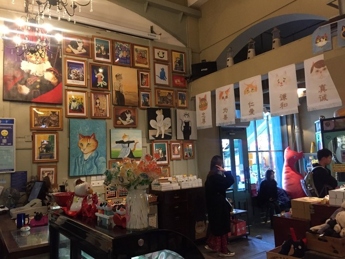
【吃】边放图边说好吧~有些是day3的，放一起方便大家看咯 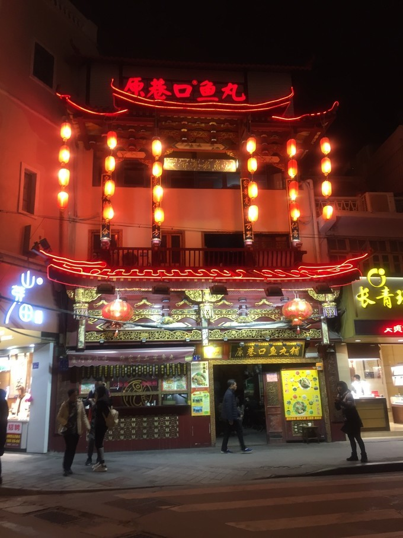 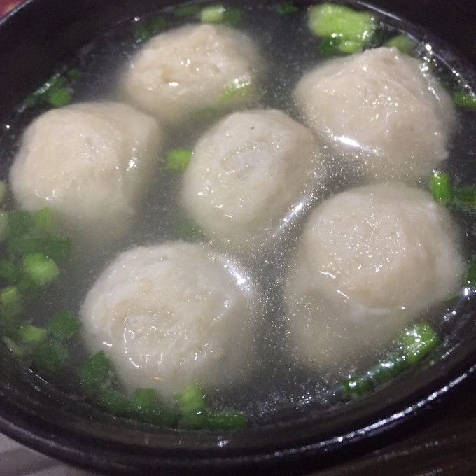
原巷口鱼丸——招牌鱼丸，25块，超级超级Q弹！里面的猪肉也不会油，吃完了以后喝口热汤真的还想再来一碗鱼丸啊喂！然后我就去了下面这个店。
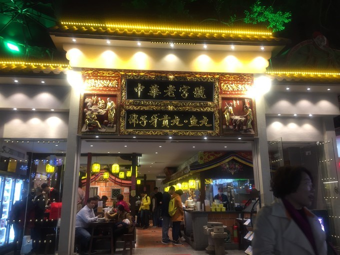 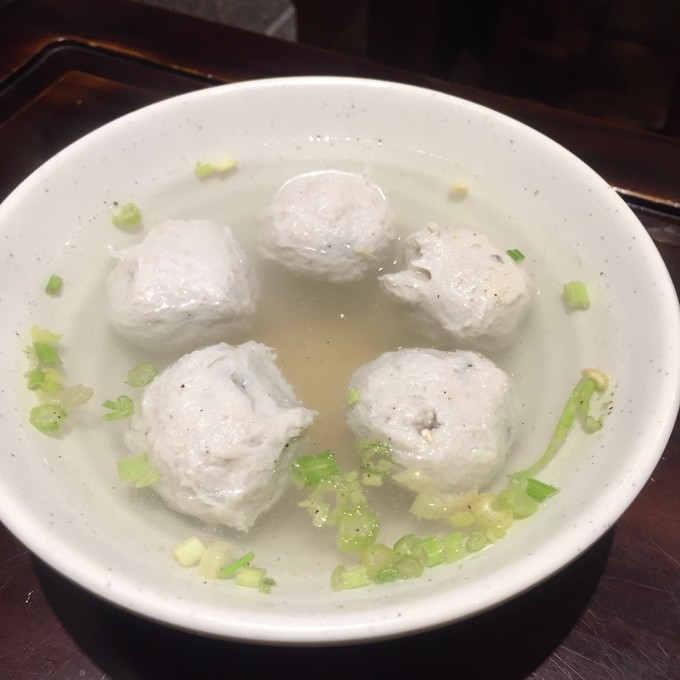
邵子牙鱼丸——吃了一份鲅鱼鱼丸，25块，口感相比巷尾来说要嫩一丁丁点，但是鱼味真的好浓啊，嘴巴里是真的会回味的！
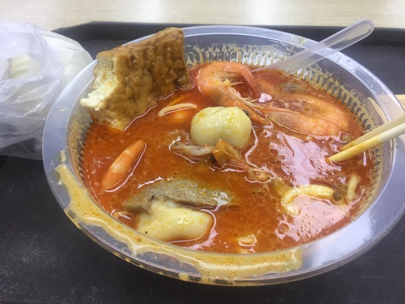 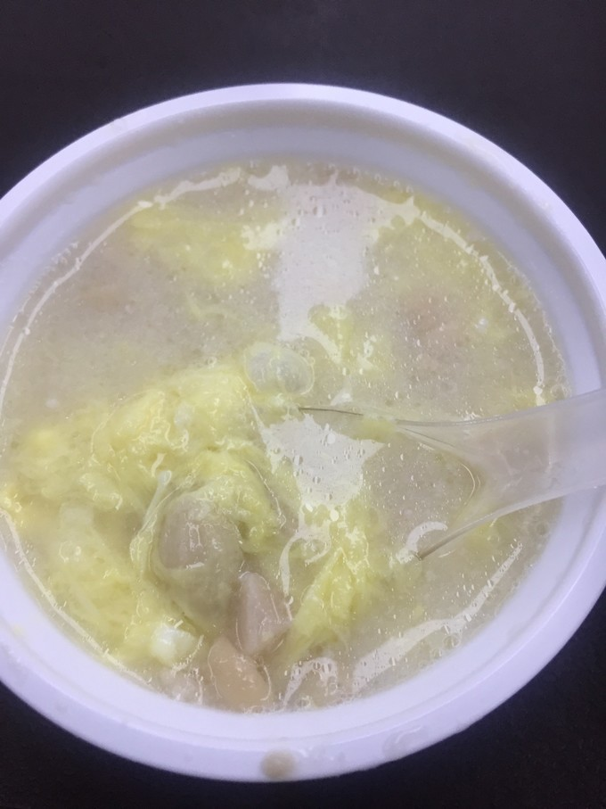黄则和沙茶面&花生汤——老字号，但是好像并不是我的style。沙茶面味道应该算是正宗了吧，但是并没有感觉到幸福。花生汤有点太甜了，有点后悔没有吃到佘阿姨（每晚8：00才开）
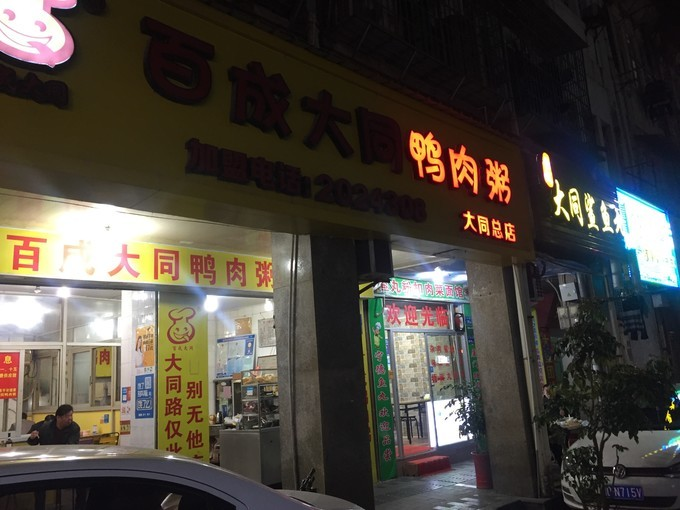 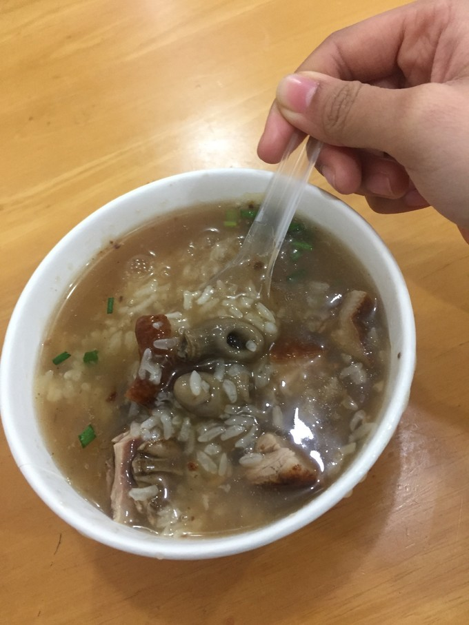大同鸭肉粥——一份粥底3块，然后可以加自己喜欢的料，加了一份鸭肉，一份鱼肚，鱼肚不推荐。因为自己本身喜欢吃鸭子，所以还是蛮喜欢的，感觉粥用的米非常棒~
【交通】 厦门飞回上海咯，深夜拼车回家休息啦~
值得记录的人
【兵哥哥】在武夷山的时候偶遇了一位专业军人，其实也算不上是兵哥哥啦。因为我是自己出来玩的，所以正好结个伴了，从大红袍到水帘洞的景点，一直在和我聊天，人真的超好！
【茶阿姨】就是坐忘茶室的老板娘啦，真的很真诚的请我喝茶，我也get了好多小知识~能够相识就是一种缘分。讲道理，她家野生小种我是真的喜欢。
【店小姐】是小姐姐啦~每一个都好漂亮！非常甜美啊！青旅的、手信店的，哎我好像有点理解前一段微博上流行的调戏网管了嘿嘿~
【糖小哥】是糖猫的小哥哥，在鼓浪屿的时候我到糖猫的店里逛过，但是因为不想要买太多东西拎着，所以回到内岛我才开始买纪念品的，然后在厦门的糖猫，我都买完了，然后小哥哥突然说“我是不是在哪见过你”。“你是不是去过鼓浪屿？”我的天！小哥的记忆力真的太好了吧！！就让人感到很暖很nice，毕竟景点每天要接待好多好多的游客诶！！
【牙牙】是第一天夜游团的导游，超级nice的为我指点了好多好吃的~~她是一边在厦门工作一边当导游的，很细心很会照顾人为她打电话~
写在最后
多多少少算是一场佛系旅游了，事前的安排其实被起不来床等各种原因改动很多~ 这场旅行真的感觉自己都变得甜美了！
下次再来的时候，我要吃酸笋面、芋头、佘阿姨、还有第八海鲜市场的海鲜大餐！